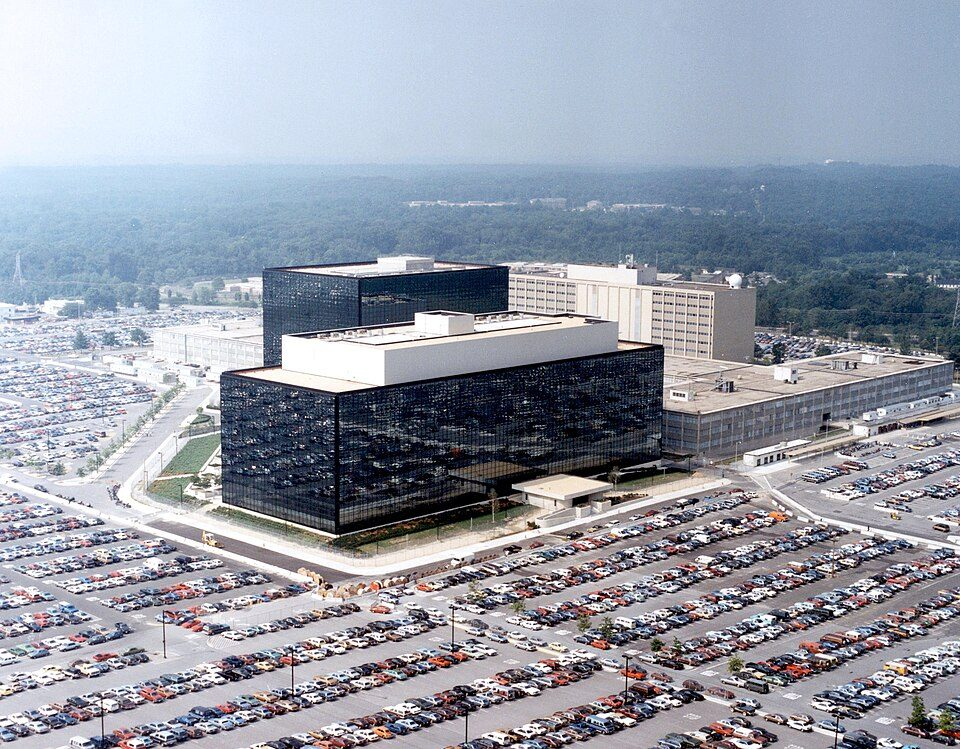

FILE OPERATION/SHAMROCK // 1945–1975
Operation SHAMROCK
SHAMROCK gave U.S. intelligence access to international telegram traffic from major carriers for decades. The Church Committee documented the arrangement; access, automated selection, human reading, retention, and dissemination were not the same thing.


CASE ANALYSIS
What the record supports
CLAIM AND BOUNDARY
Operation SHAMROCK gave U.S. intelligence agencies access to international telegram traffic transmitted by major carriers. The claim that communications were supplied on a large scale without ordinary warrants is documented. The stronger claim that every domestic message was read, or that the system captured all later digital communication, is unsupported.
CHRONOLOGY AND CONTEXT
After World War II, the Army Security Agency obtained telegram copies from Western Union and other carriers; NSA later assumed the activity. It continued through the Cold War and ended in 1975 after Church Committee scrutiny. MINARET was a related watchlist and reporting program, but its output is not identical to SHAMROCK’s traffic access.
DOCUMENTARY EVIDENCE
The Church Committee described the continuous stream of telegrams and examined selection practices. Carrier cooperation and agency files establish the arrangement, while oversight findings identified weak legal authorization and internal controls. The committee report is a primary investigation based on records and briefings that remain only partly public.
CONTRARY EVIDENCE AND ALTERNATIVES
Officials argued the focus was foreign intelligence rather than indiscriminate reading. That purpose does not resolve the absence of meaningful judicial oversight. Some retellings confuse the volume of traffic made available with the smaller amount selected for reports, inflating claims about messages individually read or understood.
UNCERTAINTY
The technical selection process and criteria remain partly classified. Period estimates may describe traffic flows, reports, or numbers of messages rather than unique people. The record supports broad access, not universal interpretation, permanent retention, or collection of every phone and internet communication.
CALIBRATED ASSESSMENT
SHAMROCK was a real, long-running arrangement that bypassed ordinary privacy safeguards. Available evidence does not support the ‘all messages read’ version. The stages of access, filtering, review, and dissemination must remain distinct because each has a different scope and privacy consequence.
WHAT WOULD CHANGE THIS
Carrier archives, selection manuals, and complete logs could quantify access and downstream use. A claim about one person requires a traceable message or report. A universal-coverage claim needs technical records of system capacity and actual operation, not an analogy to later digital surveillance.
DOCUMENT TRAIL
Sources & limitations
- Church Committee report on NSAPrimary oversight report documents SHAMROCK and carrier arrangements; some operational details remain unavailable.
- NSA cryptologic historyOfficial histories add chronology but are not an independent or complete archive.
- National Security Archive, domestic surveillanceDocument collection places SHAMROCK in context; its selection is not exhaustive.